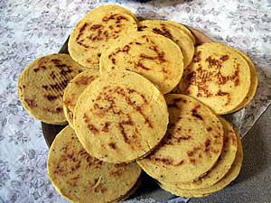
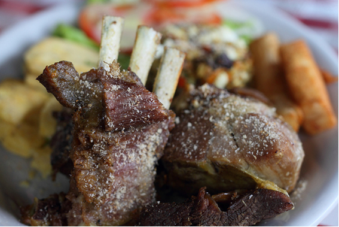

arepa de maiz pelado
La arepa hace parte de los alimentos básicos y tradicionales de la cocina colombiana. El ingrediente principal es el maíz en diferentes variedades, dependiendo de la región donde la consuman. Por ejemplo en el departamento de Antioquia se hace generalmente de maíz blanco y en la región de Santander de maíz amarillo.

La carne de cabro o cabrito la encuentras asada, frita, sudada o al horno. Acompáñala como se debe: Con arepas santandereanas y mute. Si “no te suena” el Cabrito, no dejes de probar la Arepa y el Mute.